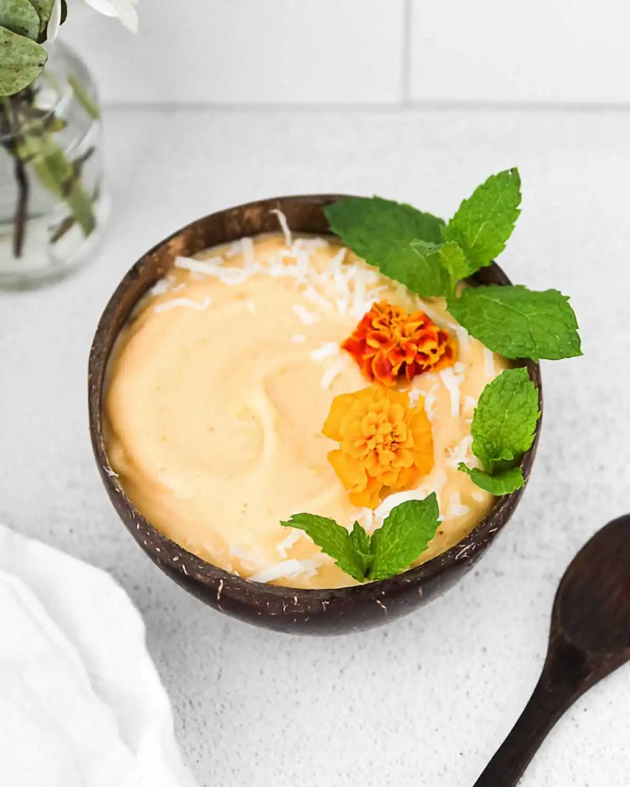

Recipes
Take a look at our favourite meal prep recipes. Remember to check back as our members submit more recipe ideas!
Broccoli Salad
- Roughly chop 1 head of broccoli and steam for 10minutes.
- Meanwhile, roughly chop 1 small red onion.
- Measure 30g pumpin seeds and 300g cranberries.
- When the broccoli is cool, mix all the ingredients together and drizzle with olive oil and season to taste.

Mango Smoothie
- Add 500g of mango, fresh or frozen to a blender.
- Add 30g of unflavoured pea protein.
- Add 300ml of almond milk.
- Add 20g of flax seeds
- Blend until smooth.
Summer Rolls
- Finely chop 1 cucumber, 1 small red onion and 1 red bell pepper.
- Drain 1 can of sweetcorn and 1 can of kidney beans.
- Place 50g of lettuce on a flour tortilla and season to taste.
- Place the other ingredients on the tortilla and roll the tortilla.
Spinach Soup
- Roughly chop 1 large potato, 2 garlic gloves and 1 onion.
- Sauté the onion and garlic over medium heat for about 5 minutes.
- Add half a cup of white beans, potato, broth and mixed herbs. Bring to a boil and then simmer for 30minutes.
- Reduce the heat and pour in 200ml of coconut milk and toss in 300g of spinach.
- Blend for a creamy consistency.
Veggie Grain Bowl
- Cook 1 cup of your choice of quinoa according to package instructions.
- Preheat the oven to 350 degrees.
- Meanwhile, roughly chop 1 small red onion, 1 cucumber and 2 large tomatoes.
- Drain 1 can of chickpeas, drizzle in olive oil and roast for 15 minutes.
- Combine all of the ingredients into a bowl.

Vegan Burrito Bowl
- Cook 1 cup of white rice according to package instructions. Meanwhile, roughly chop 1 small onion and 2 cloves of garlic and saute.
- Roughly chop 1 red bell pepper and add to pan.
- Drain 1 can of black beans, 1 can of sweetcorn and empty into pan. After approximately 5 minutes place the cooked ingredients on top of the white rice and season to taste.
Raspberry Oatmeal
- Place 30g of oatmeal into a container.
- Pour in 300ml of almond milk.
- Add 2 tablespoons of chia seeds.
- Mix the ingredients and slowly stir in 100g of raspberries.
- Place in the fridge overnight for a tasty breafast treat.
Butternut Squash Soup
- Roughly chop 500g of butternut squash, 2 cloves of garlic, 1 apple and 1 small onion.
- Sauté the onion and garlic over medium heat for about 5 minutes.
- Add everything together and add mixed herbs. Continue to cook for 15 more minutes.
- Remove from heat and stir in cocunut milk.
- Blend the soup until smooth.
Pasta & Spicy Marinara Sauce
- Cook 1 portion of pasta according to package instructions.
- Roughly chop 1 small onion and 2 cloves of garlic. Sauté for 5 minutes.
- Add 1 can of diced tomatoes to the pan and heat.
- Add a splash of balsamic vinegar, dried basil, dried oregano and chili flakes.
- Mix well and pour over the pasta.